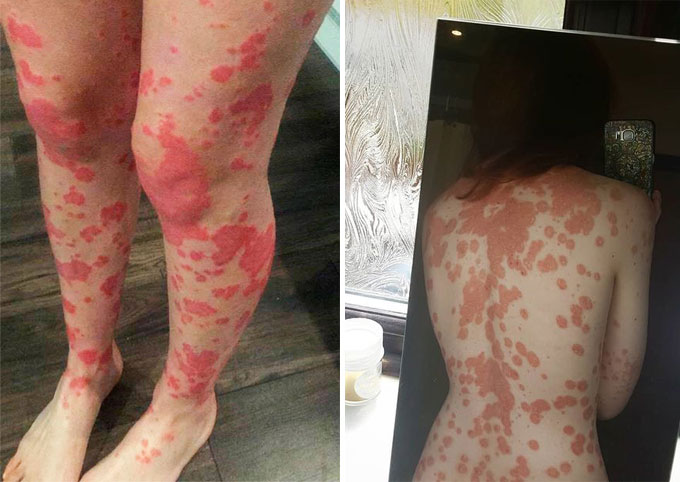

A pikkelysömör úgy néz ki, gyógyítható.
A nevem Ilona, 31 éves vagyok. Szeretném megosztani az őszinte történetemet a pikkelysömörrel való harcról. Hogyan rontotta el az iskolás éveimet, hogyan próbáltam kezelni, és mindez mihez vezetett. Ha nincs a nagybátyám, aki rátalált a pikkelysömör elleni szerre, nem tudtam volna megszabadulni ettől a betegségtől. Ez a történet segíthet másnak is elkezdeni a megfelelő kezelést, egy kis pénzt spórolni, és megőrizni az egészségeteket.
Szeretném megosztani az őszinte történetemet a pikkelysömörrel való harcról. Hogyan rontotta el az iskolás éveimet, hogyan próbáltam kezelni, és mindez mihez vezetett. De a legfontosabb, hogy megszabadultam tőle!, Ez a történet segíthet megfelelő módon elkezdeni a kezelést.
Iskolai háttértörténet
Az általános iskolában nagyon barátságos, életvidám és mosolygós lány voltam. De aztán minden megváltozott. Elkezdtek gúnyolódni, kerülni engem, nevetni rajtam, gyakran megsirattak a pikkelysömöröm miatt.
 псориазис, 4 клас
псориазис, 4 клас
Akkoriban igazi stresszt éltem meg minden nap. Emlékszem a felvételre, ahogy egy hosszú folyosó sarkában ülök, a kezemet csontig vakarom, anyám vasalt blúzát vérzem össze, és zokogok.
Amikor már minden határt átlépett ez a hihetetlen csúfolódás, a tanárok elbeszélgettek az osztállyal, és elmagyarázták, hogy támogatásra van szükségem, mert súlyos betegségben szenved, és hogy ez nem fertőző. De a beszélgetés után, ahogy a tanárok elmentek, csak még jobban bántottak. Hiszen a beszélgetések értékes szabadidőt vettek el az osztálytársaimtól.

Mire 16 éves lettem, már mindenkinél beindultak a hormonok Az osztálytársaim elkezdték festeni magukat, szoknyát hordtak, takargatták a pattanásokat. Én is elkezdtem festeni magam, de a pikkelysömör nem bírta az ilyen művészetet, az egész arcomon élénk vörös foltok jelentek meg. Egy ilyen incidens után könyörögtem anyámnak, hogy irasson el egész életemre az orvossal, csak ne kelljen iskolába járnom. De csak pár hétig adtak igazolást.
Kórházak. Készítmények, Egy borzalom.
Amint megjelentek a pikkelysömör első foltjai, a szüleim elkezdtek cipelni kórházról kórházra. Az orvosok rendelőiben mindig azt reméltem, hogy hallok majd valami jót, adnak egy kis reményt, de a látva a szüleim szomorú arcait és az orvosok komoly tekintetét, rájöttem, hogy a helyzet nem túl rózsás. Ekkor ismertem meg először a beszélgetésből az olyan betegségeket, mint a HIV és a hepatitis.
Nagyon ijesztő volt. A testem állandóan viszketett, csak úgy szedtem le magamról a bőrdarabokat, és mindenhol vérző sebek borítottak. De a szüleim nem adták fel. Félelemmel és rémült szemekkel kézen fogva vittek a soron következő orvoshoz, konzultáltak, próbáltak segíteni valahogy.

Minden orvosi konzultáció után rohantunk a gyógyszertárba, és mindent megvettünk, amit felírtak. Otthon kénytelen voltam mindenféle kenőcsöt kenni magamra, és egy maroknyi fehér tablettát kellett beszednem minden nap. A hatás fokozása érdekében a szüleim még a népi gyógyítás arzenáljából is válogattak módszereket, gyógynövényes fürdő és büdös szappanok.
Komplikációk
A hormonális gyógyszereknek legalább volt egy kis értelme, a foltok kicsit halványultak. Viszont ennek ára is volt, ugyanis elkezdtem hízni. Kénytelen voltam diétázni, ami miatt a házból száműzni kellett az összes édességet egyszer és mindenkorra. De a korlátozás lehetővé tette számomra, hogy lassítsa a súlygyarapodás mértékét.
Aztán 80 kilogrammra felhíztam. A tesztek elvégzése után kiderült, hogy a gyógyszerek súlyos szövődményhez vezettek a májamban. Egy idő után már az egész testemet hatalmas fájdalmas furunkulusok borították.

Az orvosok jól rám ijesztettek, adtak egy hónapos igazolást és befektettek a kórházba. Annyira boldog voltam abban az időben, hogy nem kellett iskolába járnom, méп akkor is, amikor elkezdtek injekciókat adni, vérátömlesztést csináltak, és végtelen vizsgálatokra kényszerítettek minden nap, hiszen még így is sokkal jobb volt, mint az iskola. Egyébként rettenetesen etettek ott, ami miatt nem kevés fölös kilót vesztettem.
A kórház után a betegség nyugodt ritmusban haladt tovább. Leérettségiztem, felvettek egyetemre.
Egyetem, visszaesés, utolsó remény
Eleinte minden rendben volt, de ahogy kezdődött a vizsgaidőszak és új emberek jelentek meg, kezdtem ideges lenni, és a pikkelysömör pedig csak egyre jobban terjedt a testemen.
A bőr 60%-át fedte a testemen, a kiütés mindenütt ott volt: a mellkasomon, a nyakamon, a fejemen, a karjaimon, a lábaimon és a hátamon is. És ez az egész viszketett, lehetetlen volt elviselni...Megint csak húsig vakatam egy-két helyen.

Ebben a stresszben és a hámlástól kiakadva futottam haza, hogy zokoghassak a párnába. Mindenkit elküldtem, aki megpróbált bejönni, ki se nyitottam a szobám ajtaját. A második napon egy kicsit megnyugodtam, megéheztem és kimentem a konyhába.
Nagyon meglepődtem, amikor megláttam a nagybátyámat. Évek óta nem láttuk egymást! Régebben órákat lógtunk a telefonon, hogy megtárgyaljuk, ki miket próbált meg, és hogy semmi sem működik. Aztán már nem hívtuk egymást, és valahogy abbamaradt a dolog.
Azon a napon viszont folt nélkül a testén ült előttem! Sokkot kaptam, és csak egy kérdés motoszkált a fejemben: miért nem hívott fel, és miért nem mondta el, hogy talált egy hatásos módszert?
A bácsikám kiolvasta az érzelmek teljes spektrumát a szememből, és odahívott az asztalhoz.
A története néhány óráig tartott. A lényege pedig az volt, hogy súlyos komplikációk léptek fel nála idegi alapon, és úgy döntött, hogy elmegy külföldre kezeltetni magát. Ott pedig szintln elment a legjobb orvosokhoz, de csak egy tudott segíteni neki.
Miután meghallgattam, megkérdeztem, mennyi pénzt adott ki ezért. Az összeget amikor meghallottam, ledöbbentem, nekem jó pár évig kellett volna spórolnom, hogy összegyűjtsek ennyit. Egy kicsit elszomorodtam, és megint kedvem lett volna visszamenni zokogni a szobámba, de a nagybátyám megállított, és átadott egy nevű gyógyszert, és hozzátette, hogy neki csak ez használt.
Egy új orvosság a bácsikámtól
Ahogy mindenki elment, lelkesen elkezdtem tanulmányozni a készítményt. Valójában minden meglehetősen egyszerűnek bizonyult: a terméket fel kell vinni a foltokra. El is kezdtem a kúrát.

Aztán mentem a vizsgákra. Egy csomó ember bámulta a foltjaimat, és a tárgyak leadása igen csak rosszul hatott az idegrendszeremre, de ezúttal a pikkelysömör nem harapódzott el. Jót sejtettem.
Minden nap, amikor a tükörbe néztem, láttam, hogy a foltok kezdenek leválni. Még feljegyzést is vezettem is a lehulló foltok számáról. Aztán az egyetemen elkezdtek nekem bókolni, amitől csak úgy olvadoztam, mint meleg időben a hó. A vastag foltok olyanná váltak, mint a lebarnult bőr, és nem ijesztették meg az embereket. Egyszer még egy srácot is elcsábítottam, de ez már egy másik történet.
Elkezdtem rövidnadrágot hordani és pólót, már sokkal magabiztosabban, a hangulatom már nem ingadozott olyan könnyen, és szép lassan a kúra végére értem.
Megint zokogni kezdtem, de most más okból: örültem, hogy a bőröm végre olyan lett, mint a hétköznapi embereké. Éjszaka néha azt álmodtam, hogy vérfoltok árasztanak el, de ébredés után kifújtam magam és megnyugodtam.

Néhány év múlva már nem volt visszaesés, nem számított, mennyire voltam ideges. És szó szerint ezen a héten megláttam, hogy árulják ezt a szert! Az gyártója elkezdte értékesíteni a terméket a hivatalos honlapján. A linket alább csatolom. Sok szerencsét kívánoik mindenkinek!